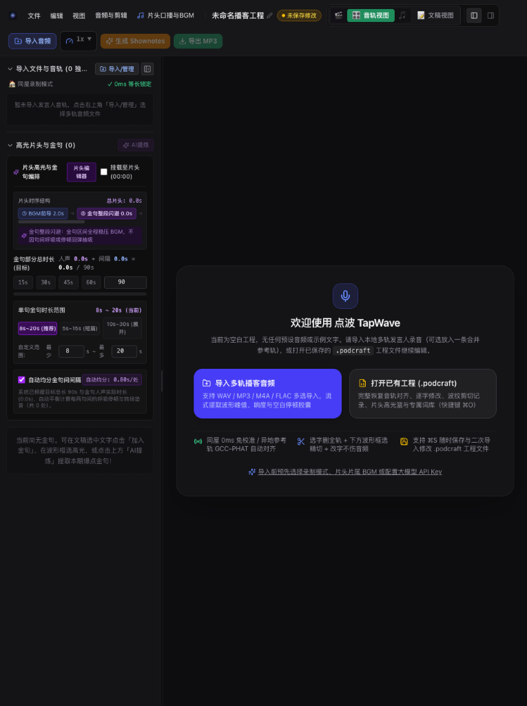
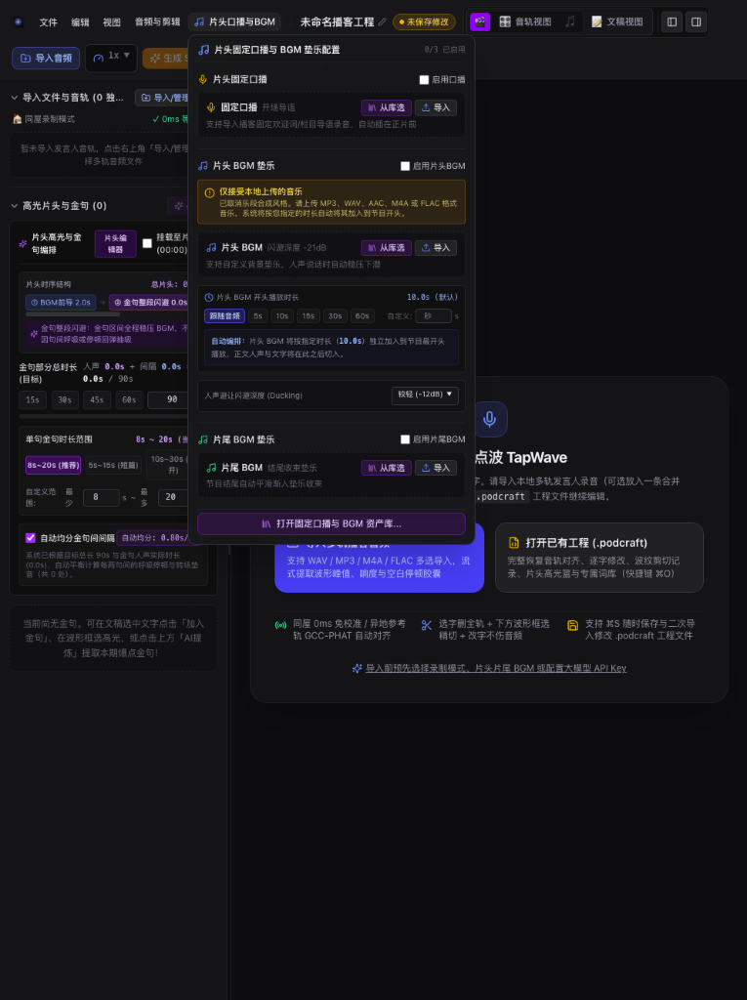
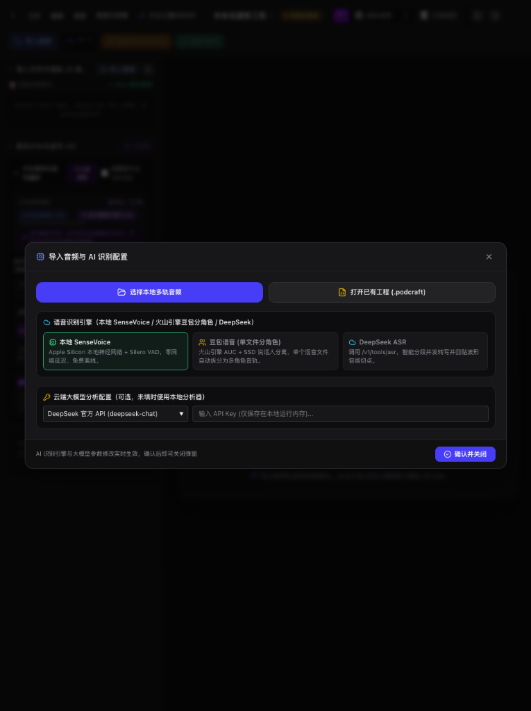
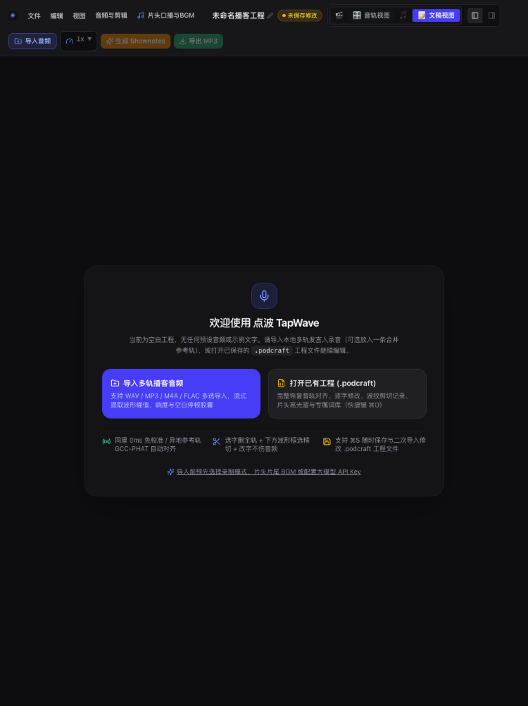

同屋免校准 & GCC-PHAT 多设备校准
同屋录制模式默认多轨等长 0ms 秒速建轨，并开启跨轨串音门限抑制；多设备模式基于 Rust rustfft 广义互相关算法，以参考轨为时钟基准自动消除毫秒级启动偏差。
专为 macOS（arm64）播客创作者打造。从 GCC-PHAT 毫秒级多轨校准、文稿与多轨波形双向精剪，到
-16 LUFS 广播级响度对齐与 AI 智能大纲 Shownotes 主旨总结，让每一期长谈都拥有唱片级听感。
以下均为 点波 TapWave v2.2.1 桌面端真实运行截图，切换标签即可对照查看各功能区的布局与操作逻辑。

点击放大查看原图 ↗左侧编排多轨与高光片头，顶部直达核心动作，中央快速导入或恢复工程。
集成「文件 / 编辑 / 视图 / 音频与剪辑 / 片头口播与 BGM」菜单，右侧支持一键切换 音轨视图 与 文稿视图，下方提供倍速试听、生成 Shownotes 与导出 MP3 快捷入口。
支持「同屋录制模式（0ms 等长锁定）」与多设备参考轨 GCC-PHAT 校准，清晰管理每位发言人独立音轨。
可视化展示片头时序结构（BGM 前导 2.0s + 金句整段闪避），预设 8s~20s 单句时长与 15s~90s 目标总长，支持自动均分金句间隔。
支持 WAV / MP3 / M4A / FLAC 多轨流式导入提取峰值与响度，或一键打开 .podcraft 工程恢复完整剪辑状态与专属词库。

点击放大查看原图 ↗在顶部下拉菜单即可统一配置片头开场导语、片头/片尾配乐及人声闪避深度。
支持从全局资产库选用或本地导入固定欢迎词/栏目导语，自动插在正片最前方。
仅接受本地安全音频格式（MP3 / WAV / AAC / M4A / FLAC），支持 5s~60s 或跟随音频时长，人声切入时自动以 -12dB 等预设深度平稳压低背景音乐。
独立启用片尾收束垫乐平滑渐入，并可一键打开「固定口播与 BGM 资产库」跨工程复用常用音频。

点击放大查看原图 ↗自由选择 Apple Silicon 本地离线识别或云端高精度分角色引擎，兼顾隐私与效率。
顶部双主按钮直接选择多轨音频文件或打开已保存的 .podcraft 工程文件。
支持 本地 SenseVoice（Apple Silicon 本地神经网络 + Silero VAD 零延迟免费离线）、豆包语音（单文件自动分角色拆轨）与 DeepSeek ASR。
支持填入 DeepSeek 官方 API 等大模型 Key（仅保存在本地运行内存），未填写时自动降级使用本地分析器。

点击放大查看原图 ↗一键隐藏左右侧边栏，显著拓宽中央文本阅读与精剪视野。
在右上角 🎛️ 音轨视图 与 📝 文稿视图 之间一键切换，满足不同阶段的剪辑与校对习惯。
进入文稿视图后自动收起音轨与高光侧边栏，专注审阅自然段成稿、生成 Shownotes 与导出成片。
告别在传统 DAW 里放大波形找气口的繁琐，把时间留给内容判断与声音审美。
同屋录制模式默认多轨等长 0ms 秒速建轨，并开启跨轨串音门限抑制；多设备模式基于 Rust rustfft 广义互相关算法，以参考轨为时钟基准自动消除毫秒级启动偏差。
支持时间对话流与按发言人聚合双视图，按嘉宾独立清理口癖与压缩空白；底部波形支持框选「全轨波纹切除（含亚字级修剪 ⚡）」、「单轨局部静音」或「选区哔声消音」。
严格解耦「剪辑删音」与「改字校对」模式，结合播客专属词库精准修正同音错字并同步刷新 Shownotes 与字幕；融合瞬态拍手检测与语义重写识别，自动折叠废片。
支持设置单片段时长（如 8–20s）与目标总长，收集高光至 00:00 片头并保留正文原处；片头曲自动下潜闪避人声，分轨响度对齐至 -16 LUFS / -1.0 dBTP，支持导出 Reaper (.rpp)。
自动绘制全片情绪能量曲线，标记笑点、高潮与平缓区；量化拆解主持人提问与嘉宾输出控场比，生成多维发音与表达训练雷达图及改进建议卡。
遵循 3–8 分钟划分粒度与 12–25 字 Hook 标题公式生成标准时间戳，将 Shownotes 与时间轴重构为段落主旨总结，杜绝冗长原文摘抄。
点击切换不同工作模块，了解 TapWave 如何衔接剪辑、混音与内容衍生。
剪辑播客最怕“咔哒”爆音与突兀吞字。TapWave 在 Rust DSP 层实现了毫秒级声学边界处理：
-20dB，重叠爆笑声智能豁免。无需手动把片头金句复制粘贴到时间轴最前方，TapWave 让高光编排像整理歌单一样直观：
8s–20s）与目标总长，精选片段自动汇总至 00:00，正文原处完整保留。.rpp 多轨工程文件，满足专业混音师二次精调需求。好的播客不仅靠剪辑，更靠每一次录制的复盘提升。TapWave 基于声学能量与文稿语义生成多维复盘报告：
基于全片语义结构提炼章节与时间轴，让听众在 10 秒内看懂整期播客的核心脉络：
3–8 分钟 划分粒度，搭配 12–25 字 Hook 标题公式。复盘创作者从人工找波形气口到文稿驱动剪辑的效率痛点。
拆解跨设备毫秒级时间差对齐及过零点防爆音处理策略。
探讨如何利用主客控场比与情绪曲线持续打磨节目质感。
前端轻量响应、Rust 底层高并发音频处理、Apple Silicon 本地语音识别 Sidecar 三层解耦。
双视图文稿编辑器、Canvas 高帧率多轨波形渲染、实时播放游标锁相。
GCC-PHAT 互相关对齐、过零点吸附、LUFS 响度测量、Reaper 工程导出与系统文件关联（.podcraft 双击直达）。
Apple Silicon 本地逐字时间戳识别，结合大语言模型完成同音纠错、智能大纲划分与 Shownotes 主旨提炼。
紧贴真实播客剪辑场景高频演进，当前最新版本为 v2.2.1。
.podcraft 文件 macOS 系统打开方式，支持双击直达工程-16.0 LUFS)轻量原生安装包（仅约 8 MB），内置完整多轨 DSP 音频引擎与全自动版本打包流水线。
# 1. 启动前端单元测试与生产构建
npm test && npm run build
# 2. 启动 macOS 原生 Tauri v2 桌面端
npm run tauri dev
# 3. 运行 Rust 音频 DSP 引擎单元测试
cd src-tauri && cargo test
# 4. (可选) 安装 Apple Silicon 本地 ASR 依赖
uv pip install -r sidecar/requirements.txt